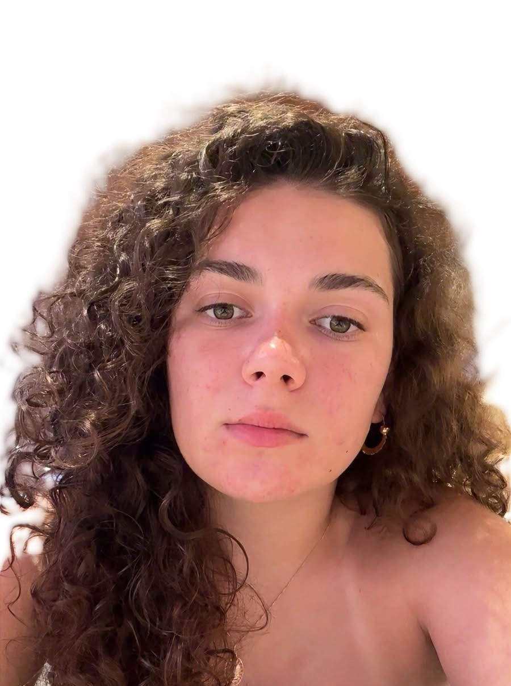

WELCOME TO MY PORTFOLIO
Welcome to My Website
Web and Mobile Computing student interested in web development, software engineering, and creating useful digital solutions.
View My Resume
About Me
My name is Klara Volarević, and I am a Web and Mobile Computing student at Rochester Institute of Technology Croatia. I graduated from the School of Design, Graphics and Sustainable Construction in Split, where I developed my creativity and interest in technology.
I am interested in web development, software engineering, and creating useful digital solutions. I enjoy learning new programming skills, solving problems, and working on projects that combine creativity and technology.
My Mission
The purpose of this website is to present my education, skills, interests, and progress as a future software developer. It serves as a personal portfolio where I can share my projects and demonstrate what I learn during my studies.
This website is intended for professors, fellow students, and potential employers who want to learn more about my background, interests, and professional goals. My goal is to continue developing my technical skills and gain experience through practical projects.